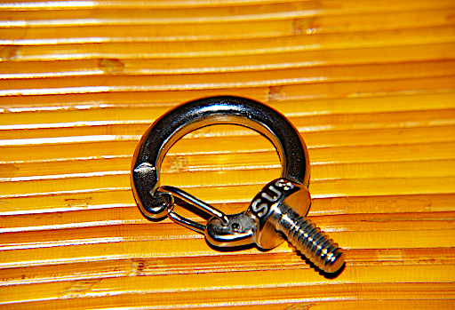
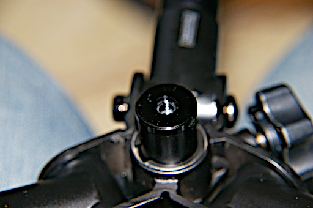
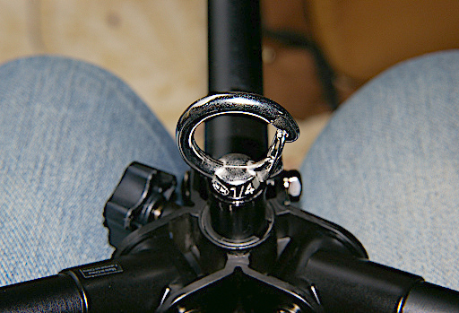
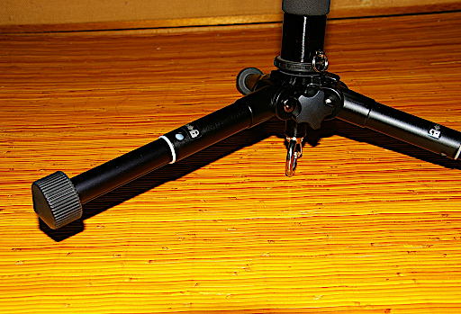
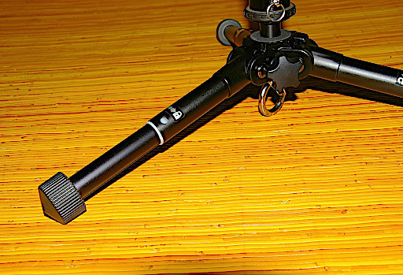
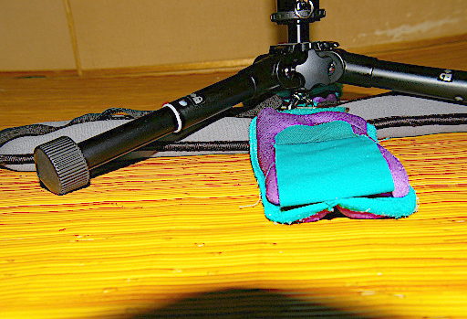
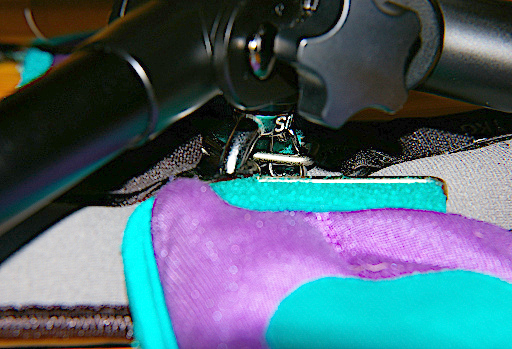
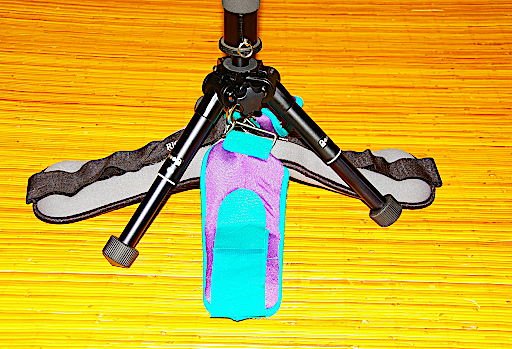
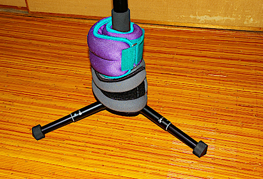
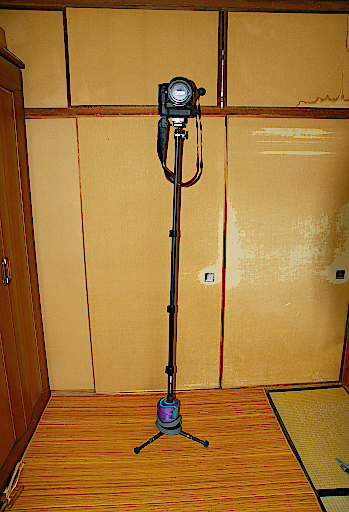

前回までなんとか Velbon Pole Pod III を安定的に立たそうということを考えて自宅内ですがいろいろテストしてきました。それで重りで三脚を安定させるという結論に至ったわけですが、もうひと工夫しようと思って下のようなものを購入しました。送料込みで 1260 円しました。

実はこいつのネジの経が 1/4 なんです。で思い出して下さい。Pole Pod III のセンターポール下部には 1/4 の穴が開いていました。

つまり Pole Pod III のセンターポール最下部に先のフックを取り付けることができるわけです。

このフックにアンクルウェイトを繋いでやればスマートに安定させることができるよね、という発想です。ですが

フックが大きすぎて脚が浮いてしまいます。ならばと思ってエレベーターを上に上げてみました。

なんとかぎりぎり脚がつくようになりました。それで脚が浮かないように気をつけて追加で購入したアンクルウェイト 2kg を含めて合計 4kg のアンクルウェイトを取り付けてみました。

ですがなぜか三脚部分からして安定しません。よくフックの辺りを見ると

フックとアンクルウェイトの金具にかなり遊びがあって、ゆるゆるなのですね。そのため遊びがあるぶん三脚が安定しないということがわかりました。
それでは三脚を少し閉じ気味にしてアンクルウェイトをぶら下げ気味にしてやればいいんじゃないかと思いました。

ですが今度は脚の開きが狭くてやはり安定しません。このフックを使う方法はダメだと結論付ける以外にありませんでした。なので結局は

写真のようにアンクルウェイトをポールの根本にくくりつけることが最も三脚部分が安定するという結論に至りました。これだと三つの脚すべてに均等に重さがかかってバランスもいいですし。
それで結局下の写真のように運用することになりました。これが Velbon Pole Pod III を安定させるのに必要なことの最終結論です。

ちなみに Pole Pod III のてっぺんに乗っているのは Canon EFS 17-55mm を取り付け、さらにバッテリーグリップを取り付けた Canon EOS 7D 約 2.1kg です。一応安定して自立しています。2kg を若干超えてるんですけどね。でもなるべく 2kg 超えはやらないほうが安全安心だとは思います。真似しないでくださいね。これはあくまで Pole Pod III の安定化テストなので負荷をかけているにすぎませんので。